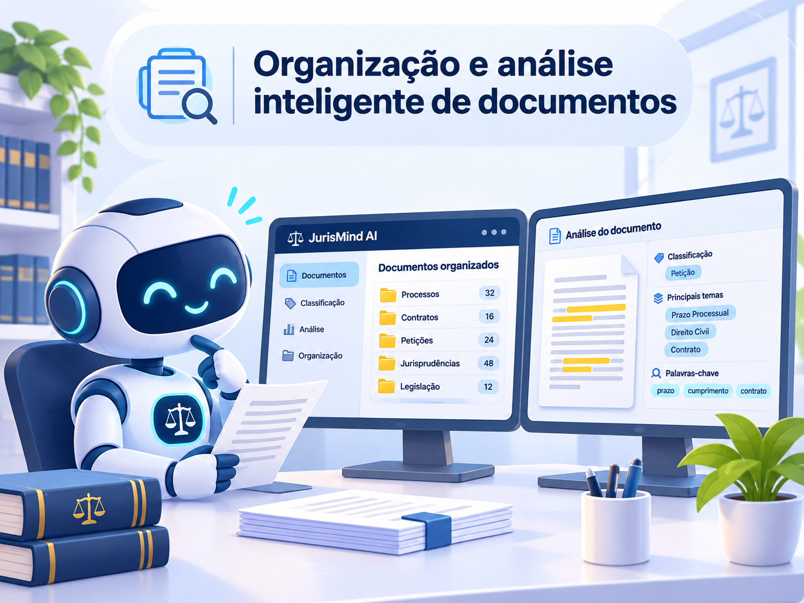
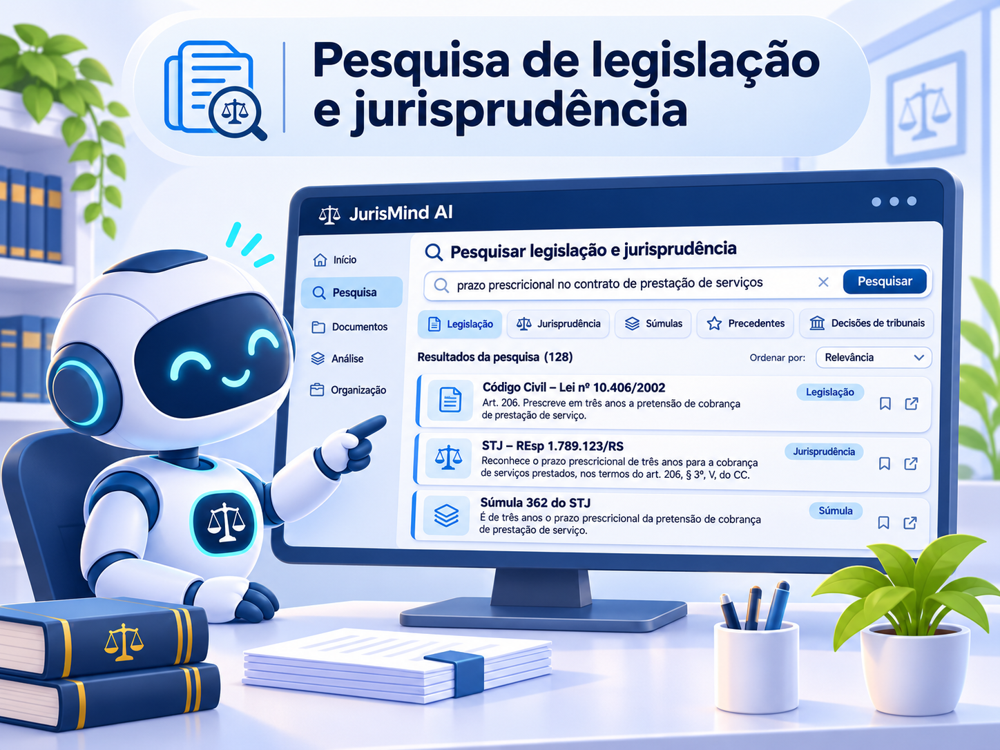
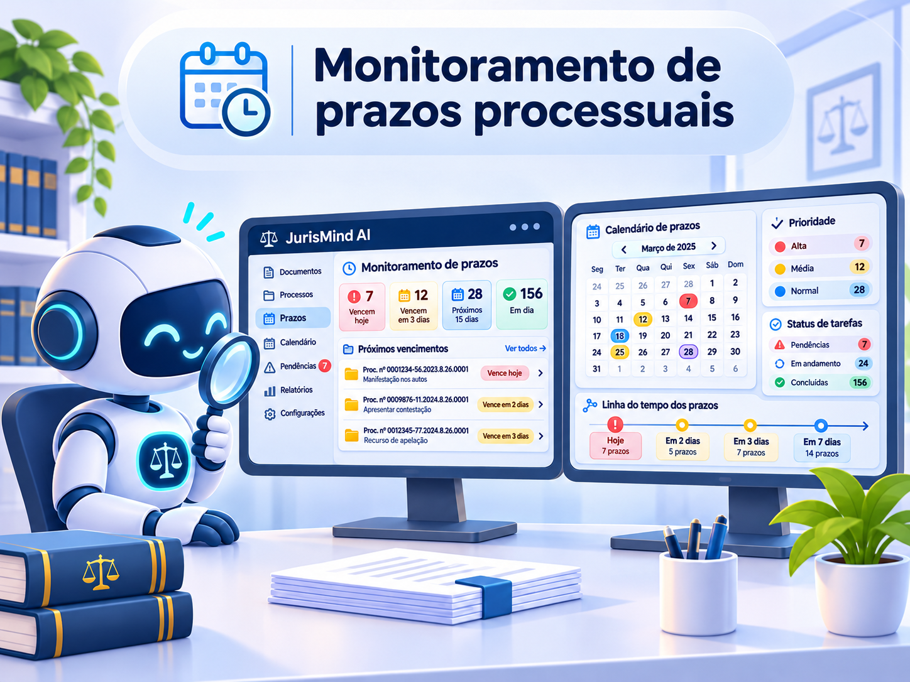
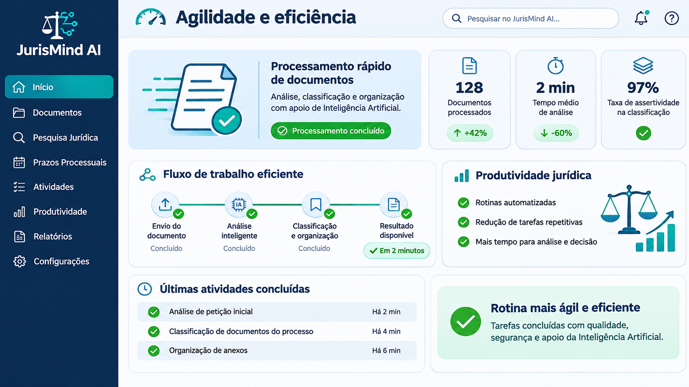
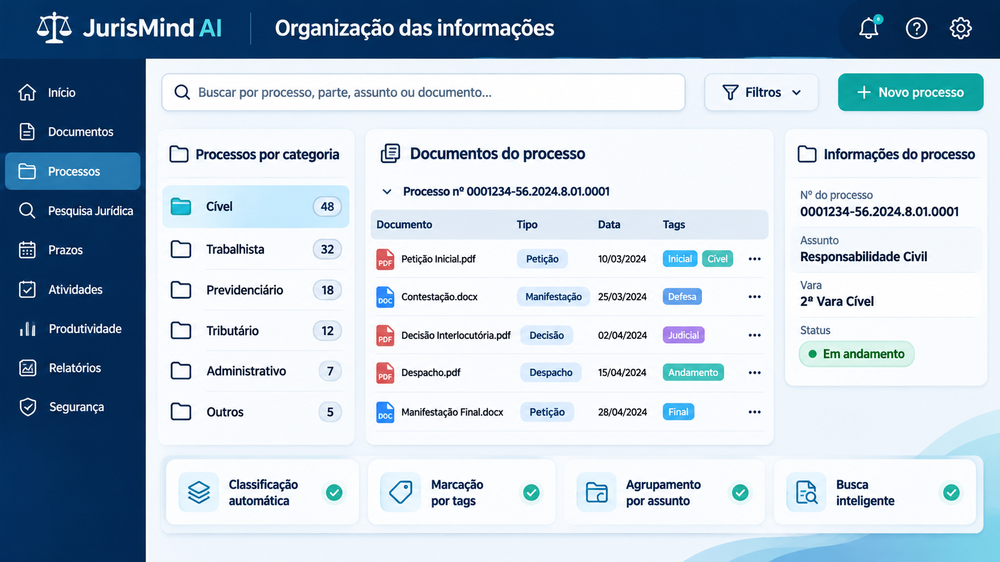
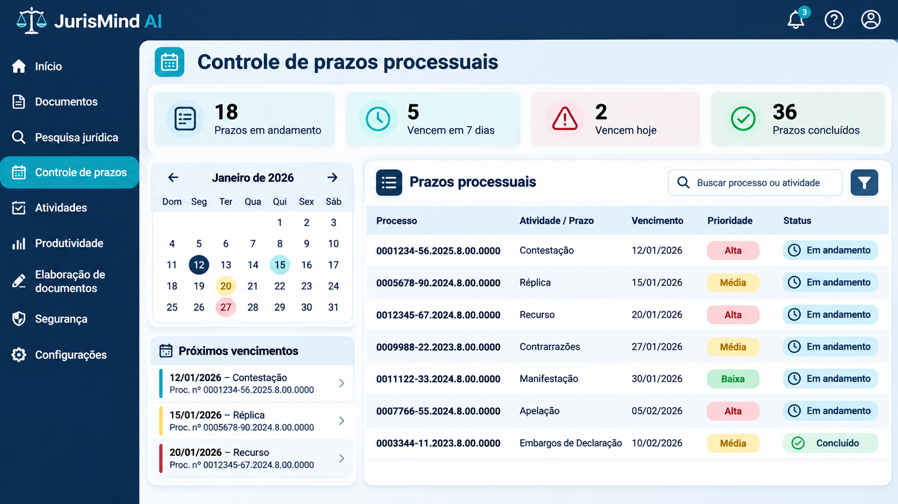
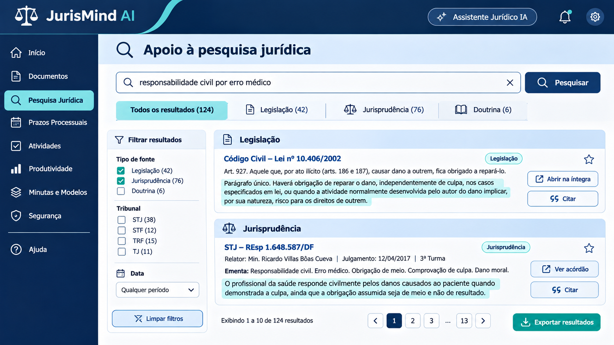
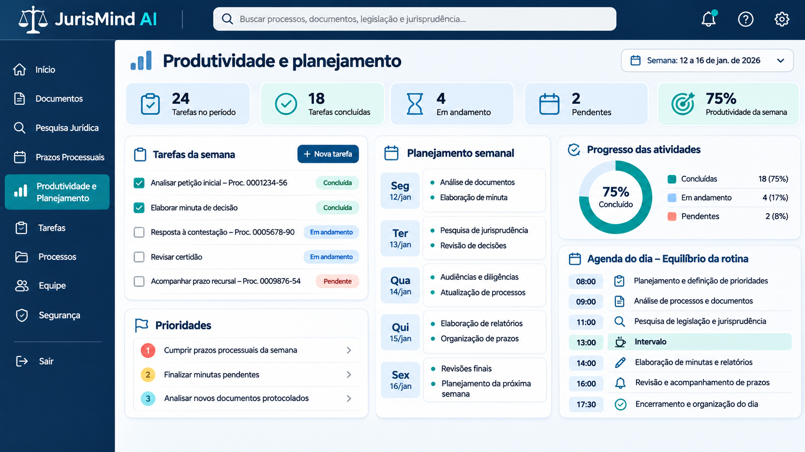

Conheça o JurisMind AI
O JurisMind AI é uma proposta de plataforma
de inteligência artificial voltada para
a área jurídica.
Seu objetivo é auxiliar profissionais do
Direito na organização de documentos,
na pesquisa de informações e no
acompanhamento de atividades e
prazos processuais.
A ferramenta foi idealizada para tornar a rotina jurídica mais prática, organizada e eficiente, sempre valorizando a segurança das informações e a supervisão humana.
Tecnologia e organização para uma Justiça mais eficiente.
Saiba maisPrincipais características
Conheça as principais funcionalidades propostas pelo JurisMind AI para modernizar e facilitar a rotina jurídica.
Organização e análise inteligente de documentos

Auxilia na classificação, organização e análise de documentos jurídicos, identificando assuntos processuais, dados importantes e informações relevantes para facilitar consultas.
Pesquisa de legislação e jurisprudência

Facilita pesquisas jurídicas, auxiliando na localização de leis, súmulas, precedentes e decisões judiciais dos tribunais para apoiar estudos e análises jurídicas.
Monitoramento de prazos processuais

Propõe acompanhar prazos processuais e atividades pendentes, apresentando alertas de vencimento e organizando as tarefas de forma cronológica, mediante registros ou integrações autorizadas.
Painel de atividades e produtividade
Centraliza tarefas, prazos e informações processuais, permitindo visualizar prioridades, acompanhar atividades e consultar indicadores para melhorar a organização do trabalho.
Apoio à elaboração de documentos jurídicos
Oferece suporte à elaboração de minutas, relatórios e certidões, auxiliando na organização dos textos e na padronização de documentos, sempre com revisão humana.
Segurança e supervisão humana
Propõe mecanismos de proteção de dados, confidencialidade e controle de acesso, mantendo as análises e decisões jurídicas sob responsabilidade dos profissionais.
Benefícios do JurisMind AI
Descubra como a tecnologia pode contribuir para uma rotina jurídica mais organizada, produtiva e eficiente.
Agilidade e eficiência

Auxilia na localização de informações, na consulta de documentos jurídicos e na execução de atividades repetitivas, contribuindo para a otimização do tempo dos profissionais.
Organização das informações

Reúne documentos, tarefas e informações processuais em um ambiente estruturado, facilitando o acesso aos conteúdos e a organização da rotina jurídica.
Controle de prazos processuais

Propõe o acompanhamento de prazos e atividades pendentes, com alertas de vencimento e organização cronológica, auxiliando no planejamento e no cumprimento das tarefas.
Apoio à pesquisa jurídica

Facilita a localização de legislação, jurisprudência, súmulas e precedentes judiciais, contribuindo para pesquisas mais organizadas e fundamentadas.
Produtividade e planejamento

Auxilia na identificação de prioridades, na distribuição das atividades e no acompanhamento da produtividade, contribuindo para uma gestão mais eficiente do trabalho.
Segurança e responsabilidade
Valoriza a proteção de dados, a confidencialidade das informações e a supervisão humana, mantendo a responsabilidade pelas análises e decisões jurídicas com os profissionais.
Entre em contato
Gostou da proposta do JurisMind AI?
Preencha o formulário abaixo para
demonstrar seu interesse em conhecer
nossa plataforma.
Formulário de demonstração. Nenhuma informação é enviada.